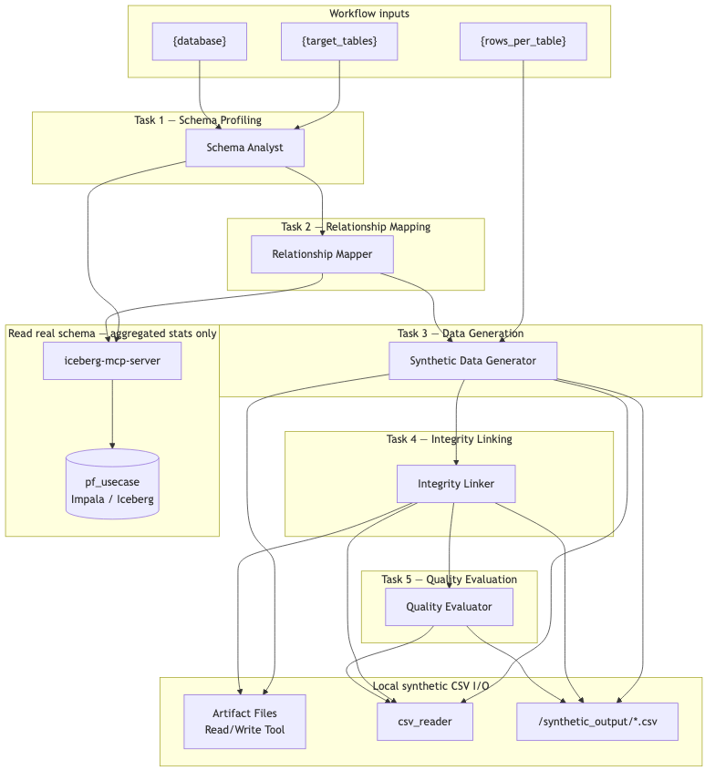
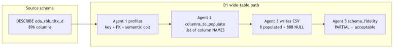
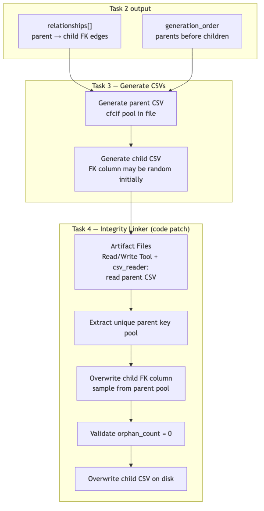

Building the Synthetic Data Generation Workflow (Direction 1)¶
When to use D1¶
Choose Direction 1 when you want to learn agentic pipeline mechanics entirely inside Agent Studio — no Synthetic Data Studio deployment required:
| Choose D1 when… | Avoid D1 when… |
|---|---|
| Teaching five-agent sequencing, MCP schema discovery, and CSV artifact I/O | You need a live SDS integration showcase → use D2 |
| You want FK patching via CSV rewrite (Agent 4) in a single Test run | You need production-scale, reproducible training data → use D3 |
| Output is scoped CSV files (typically 100–1,000 rows per table) for ML prototyping | You need full wide-table column parity or CI-gatable evaluation gates |
D1 produces session-bound CSV artifacts with LLM-generated cell values. Re-running the same inputs yields different data — that is expected for this workshop direction.
Overview¶
In this lab you build a five-agent sequential pipeline that generates PII-free
synthetic training data for the <your_database> lakehouse entirely inside Agent Studio
— no Synthetic Data Studio, no external generation service.
The pipeline scans live Impala schemas, infers FK relationships with SQL validation, generates CSV files locally, patches child FK columns by rewriting CSVs (Agent 4), and produces a statistical quality scorecard.
┌────────────────────────────────────────────────────────────────────────────────┐
│ SYNTHETIC DATA GENERATION — PURELY AGENT STUDIO (D1) │
├────────────────────────────────────────────────────────────────────────────────┤
│ │
│ Input: {target_tables}, {rows_per_table}, {database} │
│ │ │
│ ▼ │
│ ┌──────────────────┐ │
│ │ AGENT 1 │ ← iceberg-mcp-server │
│ │ Schema Analyst │ DESCRIBE, COUNT, profile key columns, PII flags │
│ └────────┬─────────┘ Output: schema manifest JSON │
│ ▼ │
│ ┌──────────────────┐ │
│ │ AGENT 2 │ ← iceberg-mcp-server │
│ │ Relationship │ FK inference + JOIN validation + generation order │
│ │ Mapper │ Output: relationships + wide_tables manifest │
│ └────────┬─────────┘ │
│ ▼ │
│ ┌──────────────────┐ │
│ │ AGENT 3 │ ← Artifact Files Read/Write Tool, csv_reader │
│ │ Synthetic Data │ Generate rows per column rules → CSV on disk │
│ │ Generator │ Output: /synthetic_output/<table>_synthetic.csv │
│ └────────┬─────────┘ │
│ ▼ │
│ ┌──────────────────┐ │
│ │ AGENT 4 │ ← Artifact Files Read/Write Tool, csv_reader │
│ │ Integrity │ Read parent CSV → patch child FK → validate orphans │
│ │ Linker │ Output: corrected CSVs + fk_validation report │
│ └────────┬─────────┘ │
│ ▼ │
│ ┌──────────────────┐ │
│ │ AGENT 5 │ ← Artifact Files Read/Write Tool, csv_reader │
│ │ Quality │ Read session CSVs → schema/distribution/PII/FK checks │
│ │ Evaluator │ Output: per-table scorecard │
│ └──────────────────┘ │
│ │
└────────────────────────────────────────────────────────────────────────────────┘

How to read Figure 1
| Region in the diagram | What it represents | Runs on |
|---|---|---|
| Workflow inputs | {target_tables}, {rows_per_table}, {database} — set at run time |
Agent Studio UI |
| Tasks 1–2 → iceberg-mcp-server → |
Schema profiling and FK validation via SQL (DESCRIBE, COUNT, join-count queries). Reads aggregated stats only — never exports real row values |
Agent Studio + Impala |
| Task 3 → Artifact Files Read/Write Tool + csv_reader | LLM-driven row generation written as session artifact CSVs | Agent Studio session store |
| Task 4 → Artifact Files Read/Write Tool + csv_reader | Deterministic FK patch — reads parent CSV, overwrites child FK column, validates zero orphans | Agent Studio session store |
| Task 5 → Artifact Files Read/Write Tool + csv_reader | Read session CSVs; statistical evaluation against schema manifest and FK report | Agent Studio session store |
Unlike D2, there is no SDS integration surface. All generation and FK enforcement happens on the Agent Studio side via CSV read/write.
Source files for all figures: ../extra_materials/synthetic_data_workflow_d1/ (.mmd
sources). Instruction embeds use PNGs from ../images/synthetic_data_workflow_d1/.
Re-render: ./render_mermaid.sh in the extra_materials folder.
Full agent/task copy-paste blocks are in Step 3 (agents) and Step 4 (tasks) below.
YAML import: ../extra_materials/synthetic_data_workflow_d1/agents.yaml + tasks.yaml.
⚠️ Understand the Scope Before You Build¶
Read this section before touching Agent Studio. D1 is an ML training path inside Agent Studio, not a stakeholder SDS demo and not a production batch pipeline.
| D1 | |
|---|---|
| IS | Agent Studio–only path — 1k–10k rows, FK patch via CSV overwrite, statistical evaluation. No SDS dependency. |
| IS NOT | Full 896-column parity on wide tables in one pass. Guaranteed reproducibility. Unlimited scale. |
| Best for | ML engineers who need scoped training data with FK integrity and PII-safe surrogates. |
| For SDS demos | Use Direction 2 — synthetic_data_d2_workflow.md |
| For production volume | Use Direction 3 — synthetic_data_d3_workflow.md |
Not suitable for production ML training¶
D1 is a workshop direction only. Do not use it to deliver production training datasets.
| Why not | Detail |
|---|---|
| Non-reproducible generation | Agent 3 writes cell values via LLM inference. Re-running produces different data even with the same {rows_per_table}. Production needs --seed-fixed faker/SDV code (D3). |
| No full column parity | Wide tables synthesise a semantic subset only; remaining columns are NULL-defaulted. ML pipelines expecting all 896 DESCRIBE columns will fail schema checks. |
| Volume & timeout limits | {target_tables}=all at 1000 rows exceeds practical Agent Studio session limits. Production uses CML Jobs and batch-generate (D3). |
| Session-bound artefacts | CSVs live in the Test session Artifact Files tab, not in versioned project paths (/home/cdsw/artifacts/) that Jobs and downstream pipelines consume. |
| Agent-driven FK patch | Agent 4 CSV overwrite is stronger than D2 prompts but still LLM-orchestrated — not the deterministic pandas enforcement in D3 scripts. |
| Evaluation not CI-gatable | Agent 5 produces a conversational scorecard, not a --strict scipy report with PASS/FAIL gates suitable for release pipelines. |
When stakeholders ask for real training data, point them to D3 deterministic mode.
Limitation 1 — Wide tables use populate + default (not full DESCRIBE parity)¶
source_transactions has ~896 columns. D1 profiles a semantic subset and generates only
columns listed in wide_tables[].columns_to_populate; the rest are NULL-defaulted.

Agent 5 reports schema_fidelity: PARTIAL for wide tables — that is expected and
acceptable for D1. Full column parity is Direction 3 scope.
Limitation 2 — FK columns must exist in the CSV before Agent 4 can patch¶
Agent 4 reads and overwrites CSV files. If Agent 3 never wrote the child FK column,
Agent 4 cannot fix it. Agent 2 must list every FK column from relationships in
columns_to_populate for wide tables.
Limitation 3 — Confirm join column names with SQL (do not assume account_no)¶
Banking schemas use varied account-key stems (transaction_no, transaction_no, etc.). Agent 2 must
validate each candidate FK with:
SELECT COUNT(DISTINCT a.<parent_col>)
FROM <your_database>.<parent> a
JOIN <your_database>.<child> b ON a.<parent_col> = b.<child_col>
Limitation 4 — LLM non-determinism and Agent Studio timeouts¶
Row values differ between runs. Running {target_tables}=all at {rows_per_table}=1000
may hit timeouts. Start scoped:
| Variable | First-run value |
|---|---|
target_tables |
source_customers,source_accounts,source_transactions |
rows_per_table |
100 |
database |
<your_database> |
Limitation summary by agent¶
| Agent | Primary constraint |
|---|---|
| Agent 1 — Schema Analyst | Profiles metadata and aggregated stats only; never exports real row values |
| Agent 2 — Relationship Mapper | Must SQL-validate FK join columns; must list every FK column in columns_to_populate for wide tables |
| Agent 3 — Synthetic Data Generator | LLM-written cell values — output is non-reproducible across runs |
| Agent 4 — Integrity Linker | Can only patch FK columns that already exist in the child CSV header |
| Agent 5 — Quality Evaluator | Produces a conversational scorecard — not a --strict scipy PASS/FAIL gate |
What makes an acceptable D1 run¶
| Bar | Required |
|---|---|
| FK columns in CSV headers | Every column in relationships appears in generated CSV |
| FK orphan count = 0 | Agent 4 fk_validation: all orphan_count_after: 0 |
| PII safety PASS | No NRIC/email/phone regex hits |
schema_fidelity |
PASS on master/account; PARTIAL acceptable on wide transaction table |
| Row count | Matches {rows_per_table} (lookup tables 50–200 exempt) |
Diagram quick reference¶
| Figure | File | Consult when |
|---|---|---|
| Figure 1 | architecture.png |
Full pipeline — which agent uses Impala vs file I/O |
| Figure 2 | wide_table_strategy.png |
Explaining partial column fill on source_transactions |
| Figure 3 | fk_integrity_flow.png |
How Agent 4 patches FKs by rewriting CSVs |
| Figure 4 | final_workflow.png |
Verifying Agent Studio UI wiring — 5 tasks, context links |
Suggested demo narrative:
- Figure 1 — "Five agents, one Impala read path, local CSVs — no SDS."
- Figure 4 — "Sequential tasks with context chaining."
- Figure 3 — "D1's advantage over D2: Agent 4 rewrites child CSVs, not prompt hints."
- Figure 2 — "Wide tables are intentionally partial — D3 for full parity."
Prerequisites¶
1. Iceberg MCP — iceberg-mcp-server¶
Registered in Agent Studio from Part 1 of the workshop.
| Parameter | Value |
|---|---|
| IMPALA_HOST | hue-impala-gateway.datalake.…cloudera.site |
| IMPALA_PORT | 443 |
| IMPALA_USER | Provided by instructor |
| IMPALA_PASSWORD | Provided by instructor |
| IMPALA_DATABASE | <your_database> |
Verify connectivity (optional):
2. File I/O tools — Artifact Files Read/Write Tool and csv_reader¶
| Tool | Used by | Purpose |
|---|---|---|
| Artifact Files Read/Write Tool | Agents 3, 4, 5 | Write and read CSV artifacts in the current workflow session |
| csv_reader | Agents 3, 4, 5 | Parse CSV contents after Artifact Files Read/Write Tool returns a readable path |
Attach Artifact Files Read/Write Tool to Agents 3, 4, and 5.
Session artifact paths: Each Test run gets a unique session folder, e.g.
agent-studio/studio-data/workflows/<workflow_name>/session/<session_id>/. Agents 3–4 write CSVs there via the Artifact Files Read/Write Tool — they appear in the Test UI Artifact Files tab for download. Do not read/synthetic_output/withcsv_readeralone in Task 5; that path is not where session artifacts live. Task 5 must use the same Artifact Files Read/Write Tool (and optionallycsv_readeron the path the tool returns) to read files Agents 3–4 wrote.
3. YAML reference (optional import)¶
| File | Location |
|---|---|
agents.yaml |
../extra_materials/synthetic_data_workflow_d1/agents.yaml |
tasks.yaml |
../extra_materials/synthetic_data_workflow_d1/tasks.yaml |
You may import via crewai_yaml_importer or build manually in the UI (Steps below).
Step 1: Create the Workflow¶
In Agent Studio: Agentic Workflows → Create Workflow → New Workflow
| Field | Value |
|---|---|
| Workflow Name | Synthetic Data Generation D1 |
| Process type | Sequential |
Step 2: Configure Workflow Settings¶
| Toggle | Setting |
|---|---|
| Is Conversational | OFF |
| Manager Agent | OFF |
Workflow input variables¶
Add exactly three input variables. Do not add parent, column, parent_table,
parent_column, child_column, table, target_tables_echo, or any FK-related
variable — FK linking is inferred in Task 2 and handled internally by Agents 3–4.
| Variable | Default | Description |
|---|---|---|
target_tables |
source_customers,source_accounts,source_transactions |
Comma-separated table names |
rows_per_table |
100 |
Rows per table (start at 100) |
database |
<your_database> |
Impala database |
Template rule: Agent Studio treats any name written in curly braces as a workflow input. Only
{target_tables},{rows_per_table}, and{database}may appear in curly braces — in backstory, goal, task Description, or Expected Output. Never brace-wrap FK or task-output field names (parent_table, parent_column, column, table, target_tables_echo). Use angle brackets for path placeholders (e.g./synthetic_output/<table>_synthetic.csv). Do not embed JSON objects in task Description fields; put JSON examples only in Expected Output.
Step 3: Add All Five Agents¶
Create each agent below. Attach tools before moving to the next agent.
Agent 1 — Schema Analyst¶
| Field | Value |
|---|---|
| Name | Schema Analyst |
| Role | Database Schema Profiling Specialist |
| LLM Model | gpt-4o (Default) |
Backstory:
You are an expert data analyst for banking data warehouses. You read Impala schemas
via iceberg-mcp-server, run lightweight statistical queries, and produce schema profiles.
Flag PII-risk columns (cif, name, email, phone, addr, mobile, nric). Never export real
row values — only aggregated statistics and representative codes.
Goal:
Profile every table in {target_tables}: DESCRIBE, COUNT, MIN/MAX/AVG, GROUP BY top-20.
For wide tables (>200 cols) profile key columns plus id/no/date/amt/ccy/status/type/code.
Output a JSON schema manifest.
MCP: iceberg-mcp-server — add get_schema and execute_query.
Agent 2 — Relationship Mapper¶
| Field | Value |
|---|---|
| Name | Relationship Mapper |
| Role | Data Modelling and FK Inference Specialist |
| LLM Model | gpt-4o (Default) |
Backstory:
You infer FK relationships from column names and validate every candidate with a JOIN
COUNT query. Never assume account_no for transaction tables in some source systems — confirm transaction_no, transaction_no, or
other stems via DESCRIBE + SQL. Produce generation_order (parents before children) and
wide_tables.columns_to_populate as a list of column NAMES (not a count).
Goal:
Using the schema manifest from Task 1: infer FKs, validate with SQL, classify table
types, output generation_order + relationships + wide_tables manifest.
MCP: iceberg-mcp-server
Agent 3 — Synthetic Data Generator¶
| Field | Value |
|---|---|
| Name | Synthetic Data Generator |
| Role | PII-Free Tabular Data Generation Specialist |
| LLM Model | gpt-4o (Default) |
Backstory:
You generate PII-free banking synthetic data and physically write each table to disk
using the Artifact Files Read/Write Tool. Writing to disk is MANDATORY — generating
data in memory and reporting it in text is NOT sufficient. For each table you must:
(a) generate the rows, (b) format them as a CSV string (header + rows), (c) call the
Artifact Files Read/Write Tool to write the file to /synthetic_output/<table>_synthetic.csv,
(d) call csv_reader to confirm the file exists and has the correct row count.
Use SYN-CUST-* for customer IDs, SYN-ACCT-* for account keys. Every CSV header must
include ALL FK columns from relationships. For wide tables populate only
columns_to_populate; NULL the rest. Never skip any table in the target_tables_echo
checklist — wide and transaction tables are the most common omissions.
Goal:
For EVERY table in the target_tables_echo list from Task 2:
1. Generate rows in memory.
2. CALL Artifact Files Read/Write Tool → write CSV to /synthetic_output/<table>_synthetic.csv.
3. CALL csv_reader → confirm file exists, row count correct.
4. Log file path and fk_columns_written.
missing_tables must be empty when done.
Tools: Artifact Files Read/Write Tool, csv_reader
Agent 4 — Integrity Linker¶
| Field | Value |
|---|---|
| Name | Integrity Linker |
| Role | Referential Integrity Enforcement Specialist |
| LLM Model | gpt-4o (Default) |
Backstory:
You enforce FK integrity by reading parent CSVs, extracting key pools, overwriting child
FK columns, and validating orphan_count=0. You read and rewrite actual CSV files using
Artifact Files Read/Write Tool and csv_reader — do not rely on prompt instructions alone.
Goal:
For each relationship: read parent CSV → extract pool → patch child FK column → validate
→ overwrite child CSV. Output fk_validation report with orphan_count_after=0 for PASS.
Tools: Artifact Files Read/Write Tool, csv_reader

How to read Figure 3
| Step | Action |
|---|---|
| Task 3 | Parent and child CSVs written to /synthetic_output/ |
| Task 4 read | Agent 4 reads parent CSV via Artifact Files Read/Write Tool / csv_reader |
| Task 4 patch | Child FK column overwritten with samples from parent key pool |
| Task 4 validate | orphan_count_after must be 0 for every relationship |
| Task 4 save | Corrected child CSV written back to disk |
This is stronger than D2 (prompt-only FK hints) but still agent-driven — not compiled
code like D3's enforce_fk().
Agent 5 — Quality Evaluator¶
| Field | Value |
|---|---|
| Name | Quality Evaluator |
| Role | Synthetic Data Statistical Quality Evaluator |
| LLM Model | gpt-4o (Default) |
Backstory:
You evaluate synthetic CSVs against the schema manifest and FK validation report.
CSVs live in the current workflow session artifact store (written by Tasks 3–4 via
the Artifact Files Read/Write Tool) — NOT at a bare /synthetic_output/ filesystem path.
Always CALL the Artifact Files Read/Write Tool to read each <table>_synthetic.csv
(use paths from Task 3 generated_tables[].file, or list session artifacts and match
*_synthetic.csv). Then use csv_reader only if the tool returns a local path you can
parse. Check schema fidelity, distribution fidelity, PII safety, referential integrity,
and row counts. PARTIAL schema_fidelity is acceptable on wide tables when only
columns_to_populate were written.
Goal:
For each table in target_tables_echo: read its CSV via Artifact Files Read/Write Tool,
evaluate against the Task 1 manifest and Task 4 fk_validation, produce per-table
scorecards and overall PASS/FAIL. Set dataset_ready_for_training=true only if all
tables PASS (PARTIAL on wide-table schema_fidelity is OK).
Tools: Artifact Files Read/Write Tool, csv_reader
Step 4: Add All Five Tasks¶
Click Save & Next to advance to Add Tasks. Create one task per agent in order. Assign each task to its corresponding agent using the Select Agent dropdown.
Agent Studio requires two fields for every task: Description (what to do) and Expected Output (the JSON shape the agent must return). Copy each block below into the matching UI field — do not merge them into a single field.
Set Context as shown for each task.
Task 1 — Schema Profiling¶
Agent: Schema Analyst | Context: (none)
Copy the following into the task Description field:
For each table in {target_tables} in {database}, use iceberg-mcp-server:
1. DESCRIBE {database}.<table> — columns, types, nullability
2. SELECT COUNT(*) — row count
3. GROUP BY top-20 on categoricals; MIN/MAX/AVG on numerics
4. Flag PII-risk columns (cif, name, email, phone, addr, mobile, nric) as pii_risk=true
For wide tables (>200 columns): profile key columns plus any column containing
id, no, date, amt, ccy, status, type, code — but list ALL columns from DESCRIBE
in the manifest.
Echo {rows_per_table} in the output JSON.
Expected Output (copy into the Expected Output field):
{
"database": "<your_database>",
"rows_per_table": 100,
"tables": {
"source_customers": {
"row_count": 45000,
"columns": [
{
"name": "customer_id",
"type": "string",
"nullable": false,
"pii_risk": true,
"top_values": null,
"min": null,
"max": null,
"avg": null,
"null_rate": 0.0
},
{
"name": "branch_code",
"type": "string",
"nullable": true,
"pii_risk": false,
"top_values": ["001", "002", "003"],
"null_rate": 0.02
}
]
}
},
"total_tables_profiled": 3,
"pii_flagged_columns": 12
}
Task 2 — Relationship Mapping¶
Agent: Relationship Mapper | Context: Task 1
Copy the following into the task Description field:
Using the schema manifest from Task 1:
1. Infer FK candidates from exact column name matches and banking naming conventions
2. Validate EACH candidate with JOIN COUNT SQL — do not assume column names
3. Classify tables: master, child, transaction, lookup
4. Produce generation_order (parents before children) — EVERY table in {target_tables} must appear
5. For wide_tables: columns_to_populate MUST list every FK column from relationships
plus semantic core (>=4 master, >=6 account, >=7 transaction column names)
MANDATORY COLUMN RULES (same bar as D2 — do not skip):
A. FK columns are non-negotiable. Any column in relationships (parent_column or
child_column) MUST appear in columns_to_populate for that table.
- source_accounts: customer_id (child FK) AND account key column (transaction_no or account_no)
- source_transactions: the confirmed account join column from DESCRIBE + JOIN SQL
B. Minimum semantic core (column names, not counts only):
- Master: PK/CIF + branch + name + open date (>= 4)
- Account: account key + customer_id + type + balance + ccy + status (>= 6)
- Transaction: account FK + txn id + amount + ccy + date + type + status (>= 7)
C. Confirm source_transactions join column — transaction tables in some source systems often use transaction_id or transaction_ref, not account_no.
D. Emit target_tables_echo: comma-split list of every table in {target_tables} for Task 3 checklist.
Example wide_tables entry (no JSON in this field — see Expected Output for full JSON):
table=source_transactions, total_columns=896,
columns_to_populate=[transaction_no, customer_id, transaction_no, txn_dt, txn_amt, ccy_cd, txn_type, status_cd]
Expected Output (copy into the Expected Output field):
{
"generation_order": [
{"table": "source_customers", "type": "master", "depends_on": [], "fk": null},
{"table": "source_accounts", "type": "child", "depends_on": ["source_customers"], "fk": "customer_id"},
{"table": "source_transactions", "type": "transaction", "depends_on": ["source_accounts"], "fk": "transaction_no"}
],
"relationships": [
{
"parent_table": "source_customers",
"parent_column": "customer_id",
"child_table": "source_accounts",
"child_column": "customer_id",
"confidence": "high",
"validated_count": 44982
},
{
"parent_table": "source_accounts",
"parent_column": "transaction_no",
"child_table": "source_transactions",
"child_column": "transaction_no",
"confidence": "high",
"validated_count": 128450
}
],
"lookup_tables": ["source_lookup_table"],
"transaction_tables": ["source_transactions"],
"target_tables_echo": ["source_customers", "source_accounts", "source_transactions"],
"wide_tables": [
{
"table": "source_transactions",
"total_columns": 896,
"columns_to_populate": ["transaction_no", "customer_id", "transaction_no", "txn_dt", "txn_amt", "ccy_cd", "txn_type", "status_cd"]
}
]
}
Task 3 — Data Generation¶
Agent: Synthetic Data Generator | Context: Tasks 1, 2
Copy the following into the task Description field:
Process every table in target_tables_echo from Task 2 in generation_order.
For EACH table T (repeat until all tables done):
STEP A — Generate rows in memory
- {rows_per_table} rows, using column rules:
* PII IDs → SYN-CUST-000001 format; account keys → SYN-ACCT-0000000001
* Amounts → log-normal within profiled [min, max]
* Categoricals → sample from top_values frequencies
* FK columns → include in EVERY row; Task 4 will overwrite with parent pool values
* Wide tables → populate ONLY wide_tables[].columns_to_populate; all other columns NULL
- Minimum column sets (use columns_to_populate from Task 2 for transactions):
* customers: customer_id, branch_code, full_name, open_date (and all other manifest columns)
* accounts: transaction_no (or confirmed account key), customer_id, acct_type, bal_amt, ccy, status
* transactions: account FK col, transaction_no, txn_amt, ccy_cd, txn_dt, txn_type, status_cd
STEP B — Build CSV string
- First row: comma-separated column header
- Remaining rows: one data row per line
- Include ALL FK columns in the header even if values are placeholder
STEP C — CALL Artifact Files Read/Write Tool
- Write the CSV string to: /synthetic_output/<T>_synthetic.csv
- This step is MANDATORY. Generating rows without calling the tool means NO FILE EXISTS.
STEP D — CALL csv_reader to verify
- Read /synthetic_output/<T>_synthetic.csv
- Confirm: file exists, row count = {rows_per_table}, FK columns in header
- If file is missing or row count is 0: retry STEP C before moving on
STEP E — Record in log
- file: /synthetic_output/<T>_synthetic.csv
- rows: {rows_per_table}
- fk_columns_written: [list of FK columns in header]
- columns_populated / columns_defaulted count
Advance to next table. When all tables in target_tables_echo are done, output the JSON.
Expected Output (copy into the Expected Output field):
{
"target_tables_requested": 3,
"tables_generated_count": 3,
"missing_tables": [],
"generated_tables": [
{
"table": "source_customers",
"rows": 100,
"file": "/synthetic_output/source_customers_synthetic.csv",
"columns_populated": 82,
"columns_defaulted": 0,
"fk_columns_written": ["customer_id"]
},
{
"table": "source_accounts",
"rows": 100,
"file": "/synthetic_output/source_accounts_synthetic.csv",
"columns_populated": 32,
"columns_defaulted": 0,
"fk_columns_written": ["customer_id", "transaction_no"]
},
{
"table": "source_transactions",
"rows": 100,
"file": "/synthetic_output/source_transactions_synthetic.csv",
"columns_populated": 8,
"columns_defaulted": 888,
"fk_columns_written": ["transaction_no"]
}
],
"generation_log": "3/3 CSVs written in FK order; source_transactions wide-table partial populate."
}
Task 4 — Integrity Linking¶
Agent: Integrity Linker | Context: Tasks 2, 3
Copy the following into the task Description field:
For every entry in relationships from Task 2:
1. Read parent CSV from /synthetic_output/<parent>_synthetic.csv
2. Extract unique parent_column values into a key pool
3. Read child CSV; overwrite child_column with random samples from pool
4. Validate orphan_count = 0
5. Overwrite child CSV using Artifact Files Read/Write Tool
For many-to-many bridge tables: generate membership counts using Poisson(lambda=3).
Expected Output (copy into the Expected Output field):
{
"fk_validation": [
{
"parent_table": "source_customers",
"parent_column": "customer_id",
"child_table": "source_accounts",
"child_column": "customer_id",
"orphan_count_before": 100,
"orphan_count_after": 0,
"status": "PASS"
},
{
"parent_table": "source_accounts",
"parent_column": "transaction_no",
"child_table": "source_transactions",
"child_column": "transaction_no",
"orphan_count_before": 100,
"orphan_count_after": 0,
"status": "PASS"
}
],
"tables_updated": ["source_accounts", "source_transactions"],
"bridge_tables_created": [],
"overall_status": "PASS"
}
Task 5 — Quality Evaluation¶
Agent: Quality Evaluator | Context: Tasks 1, 3, 4
Copy the following into the task Description field:
Evaluate all generated CSVs from Tasks 3–4. Files are session artifacts — NOT on a
bare /synthetic_output/ filesystem path.
STEP 1 — Resolve file list
- From Task 3 output: use generated_tables[].file for each table (preferred).
- Fallback: for each table in target_tables_echo, expect <table>_synthetic.csv.
- If unsure: CALL Artifact Files Read/Write Tool to list artifacts in the current
session and match files ending in _synthetic.csv.
STEP 2 — Read each CSV (mandatory)
- For EACH file: CALL Artifact Files Read/Write Tool to read the CSV content.
Use the exact path from Task 3 generated_tables[].file when available.
- Do NOT call csv_reader with /synthetic_output/... alone — that path is not where
session artifacts live. csv_reader is only for parsing after the artifact tool
returns a readable path.
STEP 3 — Evaluate each table in target_tables_echo
1. completeness_check — CSV read succeeded (missing → FAIL)
2. schema_fidelity — PASS / PARTIAL (wide) / FAIL
3. distribution_fidelity — top-3 categoricals, numeric mean within 20% of profile
4. pii_safety — no NRIC/email/phone patterns in string cells
5. referential_integrity — use Task 4 fk_validation (any FAIL → dataset FAIL)
6. row_count_check — matches {rows_per_table} (lookup 50-200 exempt)
OUTPUT FORMAT (required for Test UI readability):
Return a markdown report with headers and tables (not a single JSON blob).
Use this structure:
# Synthetic Data Quality Report — D1
## Executive Summary
| Field | Value |
| overall_verdict | PASS or FAIL |
| tables_requested | 3 |
| csv_files_found | 3 |
| dataset_ready_for_training | true or false |
## Files Generated
| Table | CSV file | Rows | Columns in header | FK columns present |
(one row per table; flag MISSING if CSV absent or unreadable)
## FK Chain (from Task 4)
| Parent → Child | Column | orphan_count_after | Status |
## Per-Table Scorecards
### <table_name>
| Criterion | Result | Notes |
(schema_fidelity, distribution_fidelity, pii_safety, referential_integrity, row_count_check)
## Issues & Recommendations
- Bullet list; CRITICAL if any target table CSV is missing or unreadable
After the markdown, append a fenced ```json block with evaluation_summary and table_scorecards.
If any target table CSV cannot be read via Artifact Files Read/Write Tool,
overall_verdict = FAIL and dataset_ready_for_training = false.
PARTIAL schema_fidelity on wide tables is OK when FK and PII pass.
Expected Output (copy into the Expected Output field):
# Synthetic Data Quality Report — D1
## Executive Summary
| Field | Value |
|---|---|
| overall_verdict | PASS |
| tables_requested | 3 |
| csv_files_found | 3 |
| tables_passed | 3 |
| dataset_ready_for_training | true |
## Files Generated
| Table | CSV file | Rows | Columns in header | FK columns present |
|---|---|---:|---:|---|
| source_customers | source_customers_synthetic.csv | 100 | 12 | customer_id |
| source_accounts | source_accounts_synthetic.csv | 100 | 10 | customer_id, transaction_no |
| source_transactions | source_transactions_synthetic.csv | 100 | 8 | transaction_no |
## FK Chain (from Task 4)
| Parent → Child | Join column | orphan_count_after | Status |
|---|---|---:|---|
| customers → accounts | customer_id | 0 | PASS |
| accounts → transactions | transaction_no | 0 | PASS |
## Per-Table Scorecards
### source_customers
| Criterion | Result | Notes |
|---|---|---|
| schema_fidelity | PASS | |
| distribution_fidelity | PASS | |
| pii_safety | PASS | |
| referential_integrity | PASS | parent table |
| row_count_check | PASS | 100 rows |
### source_accounts
| Criterion | Result | Notes |
|---|---|---|
| schema_fidelity | PASS | |
| referential_integrity | PASS | customer_id ⊆ customers |
### source_transactions
| Criterion | Result | Notes |
|---|---|---|
| schema_fidelity | PARTIAL | 8/896 cols populated (expected) |
| referential_integrity | PASS | transaction_no ⊆ accounts |
## Issues & Recommendations
- None — all 3 target CSVs present with FK columns in headers.
```json
{
"evaluation_summary": {
"overall_verdict": "PASS",
"tables_evaluated": 3,
"tables_passed": 3,
"tables_failed": 0,
"csv_files_found": 3,
"dataset_ready_for_training": true
},
"table_scorecards": [
{
"table": "source_customers",
"schema_fidelity": "PASS",
"distribution_fidelity": "PASS",
"pii_safety": "PASS",
"referential_integrity": "PASS",
"row_count_check": "PASS",
"verdict": "PASS"
},
{
"table": "source_accounts",
"schema_fidelity": "PASS",
"distribution_fidelity": "PASS",
"pii_safety": "PASS",
"referential_integrity": "PASS",
"row_count_check": "PASS",
"verdict": "PASS"
},
{
"table": "source_transactions",
"schema_fidelity": "PARTIAL",
"distribution_fidelity": "PARTIAL",
"pii_safety": "PASS",
"referential_integrity": "PASS",
"row_count_check": "PASS",
"verdict": "PASS",
"notes": "Wide table: 8 columns populated; FK transaction_no present."
}
]
}
Once all five tasks are added:

**How to read Figure 4**
| Element | Verify |
|---|---|
| Sequential, non-conversational | Fixed task order |
| Task 2 context → Task 1 | Schema manifest available for FK inference |
| Task 3 context → Tasks 1+2 | Generation uses manifest + relationships |
| Task 4 context → Tasks 2+3 | FK patch uses relationships + generated CSVs |
| Task 5 context → Tasks 1+3+4 | Evaluation uses manifest, CSVs, FK report |
| Agents 1–2 + iceberg-mcp-server | Only schema tasks touch Impala |
| Agents 3–5 + Artifact Files Read/Write Tool | CSV write (3–4), read (5), FK patch (4) on session artifact store |
---
## Step 5: Configure Tool Parameters
### iceberg-mcp-server (Agents 1 and 2)
Same Impala credentials as D2 prerequisites.
### Artifact Files Read/Write Tool / csv_reader (Agents 3, 4, 5)
No extra UserParameters unless your deployment requires a base path override.
**Task 5 read rule:** Attach **Artifact Files Read/Write Tool** to Agent 5. Session
CSVs are under `studio-data/workflows/<workflow>/session/<session_id>/` — visible in
the Test UI **Artifact Files** tab. Task 5 must read through the artifact tool using
paths from Task 3 `generated_tables[].file`, not `csv_reader` on `/synthetic_output/` alone.
---
## Step 6: Run the Workflow
A scoped first run typically takes **5–15 minutes** (five LLM tasks + Impala queries +
CSV generation). Sequence: Task 1 → 2 → 3 → 4 → 5.
---
## Step 7: Verify the FK Chain
After Task 4 completes, verify programmatic FK integrity — D1's key differentiator vs D2.
### Beat 0 — Artifact file count
In the Test UI **Artifact Files** tab, confirm **3 CSVs** (one per target table):
If only 2 CSVs appear, Task 3 skipped the transaction table — re-run with the updated Task 3 description.
### Beat 1 — Task 2 `relationships` array
Confirm edges like:
### Beat 2 — Task 4 `fk_validation`
Every entry must show:
```json
{"orphan_count_after": 0, "status": "PASS"}
If orphan_count_after > 0, re-run Task 4 or fix Task 2 join column names.
Beat 3 — Spot-check CSVs¶
Open child CSV and confirm every FK value appears in the parent CSV for that column.
Beat 4 — Task 5 scorecard¶
| Table | Expected |
|---|---|
source_customers |
schema_fidelity PASS |
source_accounts |
schema_fidelity PASS, referential_integrity PASS |
source_transactions |
schema_fidelity PARTIAL (expected), referential_integrity PASS |
Troubleshooting¶
| Symptom | Likely cause | Fix |
|---|---|---|
| Task 5 reports all CSVs missing but Artifact Files tab shows them | Agent 5 used csv_reader on /synthetic_output/ instead of Artifact Files Read/Write Tool |
Attach artifact tool to Agent 5; re-paste Agent 5 Backstory/Goal and Task 5 Description |
| Workflow shows extra inputs (parent_table, table, column, target_tables_echo) | Agent/task text contains brace-wrapped field names or inline JSON like {"table":...} in a Description field |
Delete extra inputs; re-paste Description/Expected Output from Step 4 (only 3 inputs allowed) |
Template variable '…' not found |
Same as above — Agent Studio parsed a name in curly braces that is not a workflow input | Search agent backstory/goal and task fields for stray {…}; remove or rephrase without braces |
| Agent 4 cannot patch FK | FK column missing from child CSV header | Add column to Task 2 columns_to_populate; re-run Task 3 |
| Only 2 CSVs / missing source_transactions | Agent 3 stopped after master+account | Re-run Task 3 with updated description: must write all tables in target_tables_echo |
| CSVs too simple (FK cols only) | Task 2 semantic core too thin | Expand columns_to_populate with >=6 account / >=7 transaction columns |
| orphan_count_after > 0 | Wrong parent/child column in relationships | Re-run Task 2 with JOIN validation SQL |
| Wide table FAIL schema | Too few columns in CSV | Expand columns_to_populate in Task 2 |
| PII regex hits in Task 5 | Real-looking NRIC/email in generated text | Regenerate with SYN-* surrogate rules in Task 3 |
Timeout on target_tables=all |
Too many tables for one session | Stay scoped or move to D3 |
When to use D2 or D3 instead¶
| Need | Direction |
|---|---|
| Stakeholder SDS demo, ≤25 rows, LLM judge | D2 — synthetic_data_d2_workflow.md |
| Full schema parity, 10k+ rows, reproducible CML Jobs | D3 — synthetic_data_d3_workflow.md |
Related files¶
| File | Purpose |
|---|---|
../extra_materials/synthetic_data_workflow_d1/agents.yaml |
Agent definitions (YAML import) |
../extra_materials/synthetic_data_workflow_d1/tasks.yaml |
Task definitions (YAML import) |
../extra_materials/synthetic_data_workflow_d1/agents.yaml |
Agent Studio import |
../extra_materials/synthetic_data_workflow_d1/tasks.yaml |
Task definitions |
../images/synthetic_data_workflow_d1/*.png |
Rendered diagrams |